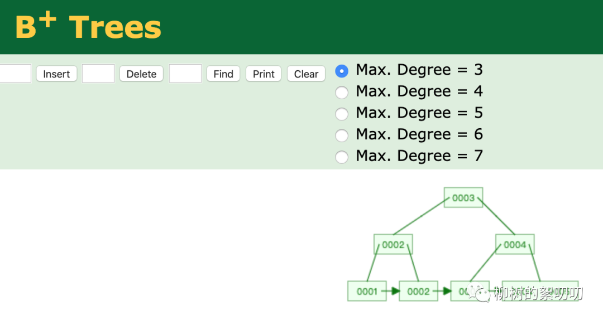
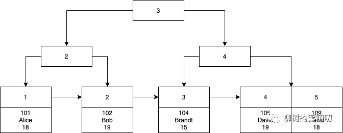

Mysql的索引是怎么加速查询的
昨天讲到了索引的基础知识《爱上面试官》系列-数据库索引
事实上，在你还没有执行
create index语句的时候，MySQL 就已经创建索引了。让我们从建表开始吧。
1、聚簇索引
执行建表语句：
CREATE TABLE `student` (
`id` BIGINT UNSIGNED AUTO_INCREMENT NOT NULL COMMENT '主键id',
`student_no` VARCHAR(64) COMMENT '学号',
`name` VARCHAR(64) COMMENT '学生姓名',
`age` INT COMMENT '学生年龄',
PRIMARY KEY (`id`)
) ENGINE=InnoDB CHARSET=utf8mb4 COMMENT='学生信息表';插入 5 条数据：
insert into student(student_no,name,age) values(101,"Alice",18);
insert into student(student_no,name,age) values(102,"Bob",19);
insert into student(student_no,name,age) values(104,"Brandt",15);
insert into student(student_no,name,age) values(105,"David",19);
insert into student(student_no,name,age) values(109,"David",18);在插入的过程中，MySQL 会用你指定的主键，在这里是递增主键，维护起一棵 B+树，我用了旧金山大学做的 BPlusTree Visualization 来模拟这棵树的样子，主键从 1 开始递增，插入五条，所以是 1 到5：

如果有时间，也建议你到这个网站去，从 1 到 5，一个一个插入，你会看到 B+树在插入的过程中是怎么维护它的几个特性的：
有序：左边节点比右边小
自平衡：左右两边数量趋于相等
节点分裂：节点在遇到元素数量超过节点容量时，是如何分裂成两个的，这个也是 MySQL 页分裂的原理
模拟工具只支持插入一个值，所以你看不到主键之外的其他数据，实际上，这棵 B+树的叶子节点是带有行的全部数据的，所以我又自己画了张完整的图：

如果没有这棵 B+树，你要根据主键查询，比如：
select * from student where id = 5;对不起，数据是无序的，你只能全表扫描，犹如大浪淘沙。
有同学会说主键不是递增的吗，那不就可以用二分法来查找？不是的，主键虽然是递增的，但是如果你写入磁盘时，没有去维护有序数组这样一个数据结构（比如你删掉了 4，怎么把 5 往前面挪），那数据在磁盘里依旧是无序的，查找时只能随机查找，而如果你维护了有序数组这样的数据结构，其实也是建了索引，只是建了不一样的数据结构的索引罢了。
至于为什么 MySQL 选择了B+树，而不用上面说的有序数组、hash索引等，咱们后面再聊。
现在有了这棵 B+树，数据被有规律的存储起来，查找 id=5，也不再大浪淘沙，而是变得很有章法：
从上到下，先找到 3，5 比它大，找右节点
接着找到 4，发现 5 还是比它大，继续找右节点
这次到达叶子节点了，叶子节点是一个递增的数组，那就用二分法，找到 id=5 的数据
你要访问磁盘的次数，是由这棵树的层数决定的。为了方便说明，我在文章里举的例子的数据量不会太大，所以用不用索引，性能提升的效果不明显，但是你可以脑补下大数据量的画面。
如果你没有指定主键呢？没关系，唯一键也可以。
连唯一键也没有？也没关系，mysql会给你建一个rowid字段，用它来组织这棵 B+树.
反正 MySQL 就一个目的，数据要有规律的存储起来，就像之前在 数据库是什么 里说的，数据是否被规律的管理起来，是数据库和文件系统区分开来的重要因素。
这个 MySQL 无论如何都会建起来，并且存储有完整行数据的索引，就叫聚簇索引（clustered index）。
2、二级索引
聚簇索引只能帮你加快主键查询，但是如果你想根据姓名查询呢？
对不起，看看上面这棵树你就知道，数据并没有按照姓名进行组织，所以，你还是只能全表扫描。
不想全表扫描，怎么办？那就给姓名字段也加个索引，让数据按照姓名有规律的进行组织：
create index idx_name on student(name);这时候 MySQL 又会建一棵新的 B+树：
你会发现这棵树的叶子节点，只有姓名和主键ID两个字段，没有行的完整数据，这时候你执行：
select * from student where name = "David";MySQL到你刚刚创建的这棵 B+树 查询，快速查到有两条姓名是“David”的记录，并且拿到它们的主键，分别是 4 和 5，但是你要的是select *呀，怎么办？
别忘了，MySQL 在一开始就给你建了一棵 B+树 了，把这两棵树，放在一起，拿着从这棵树上查到的两个主键ID，去聚簇索引找，事情不就解决了？
这个不带行数据完整信息的索引，就叫二级索引（secondary index），也叫辅助索引。
3、复合索引
继续，如果我还想根据姓名和年龄同时查询呢？
select * from student where name = "David" and age = 18;还是那个道理，数据虽然按照name 有规律的组织了，但是没有按照 age 有规律组织，所以我们要给 name 和 age 同时建索引：
create index idx_name_age on student(name,age);这时候 MySQL 又会建一棵 B+树，这下 B+树 的节点里面，不只有 name，还有 age 了：
注意观察我用红色虚线框出来的那两个节点，这是这棵树和上面那棵只给 name 建索引的树的唯一区别，两个元素换了个位，因为排序时，是先用 name 比较大小，如果 name 相同，则用 age 比较。
还是那句话，这里举的例子数据量很少，你可以想象下有一万个叫“David”的学生，年龄随机分布在 13 到 20 之间，这时候如果没有按照 age 进行有规律的存储，你还是得扫描一万行数据。
4、未完待续
我想起之前大学的一个学霸，人家考高数前都在背公式，他却在纸上练习这些公式的推导过程，纸上写的密密麻麻，当时不解，现在回想起来，这实在是降维打击。
别人都只会用公式，他却时刻牢记这些公式是怎么来的，别人考试就只会套用公式，他却可以用这些公式以外的知识解决问题。
MySQL索引也是，很多人都知道索引就像字典的目录，索引是 B+树，但是如果只知道这些，又有什么用呢？
知识是需要往深里学，才能转化为能力的，你知道的多，并不代表你能解决的问题就多，反而那些知道的没那么多，但是对他知道的东西，都研究透彻的人，才能一通百通。
当你知道了 MySQL 的索引长成这个样子后，还用去背什么“最左匹配”吗？
随便问个问题，只给student 表建 idx_name_age 这个复合索引，这两个 sql 语句，会走索引吗？
select * from student where name = "David";select * from student where age = 18;照着上面这几张图，你几乎可以推导出一切，什么样的 sql 能走索引，什么样的 sql 不能。
甚至，这么精妙的数据结构设计，难道就只能用来加速查询吗？
至少现在我能想到的，索引可以拿来干的事情，就至少有四种。